A tymczasem w Cameracie...
.
2013-05-03
Tradycyjnie już „zrywka” o godz. 06.00, 07.00 śniadanko i w drogę. Jedziemy do Białogrodu Dniestrowskiego, zwiedzać Twierdzę Akerman.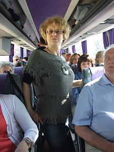 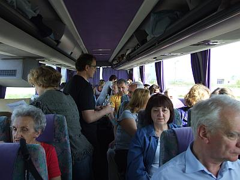
Przejazd miał być szybki i bez zatrzymywania się, ale Camerata zobaczyła morze blisko drogi i . . .
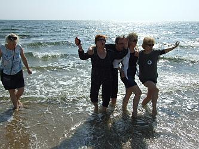 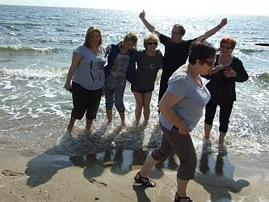
Nogi trzeba było pomoczyć :) Można też nóg nie moczyć i zostać „Syrenkiem”.
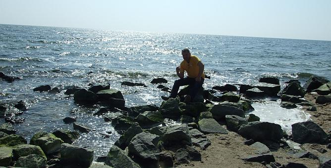
Ale nie ma czasu. Wsiadamy i jedziemy do celu naszej wycieczki.
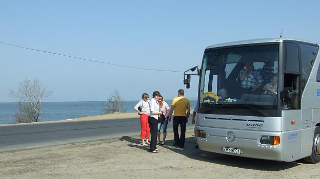
Jesteśmy na miejscu. To właśnie z tego miejsca w swą podróż na Krym wyruszył jeden z największych polskich wieszczów - Adam Mickiewicz. Zaowocowało to powstaniem cyklu osiemnastu sonetów zwanych „Sonetami Krymskimi”.
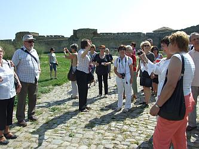 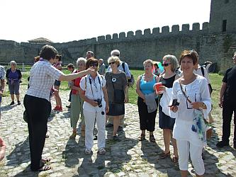
Akerman był inspiracją do stworzenia jednego z najbardziej znanego sonetu, zatytułowanego „Stepy Akermańskie”. Czy wiecie? że wyrecytowała nam, z pamięci ten sonet studentka Kinga Klima (sopran Cameraty) podczas jazdy do twierdzy. A muszę Wam powiedzieć, że nie jest studentką żadnej filologii. Recytowała super, „tak trzymaj”, to od Cameraty.
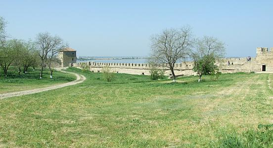
Trzeba wracać, bo przecież dzisiaj śpiewamy kolejny koncert. Obiad, chwila odpoczynku, przebieramy się i jedziemy na koncert. Jeszcze ostatnie przygotowania
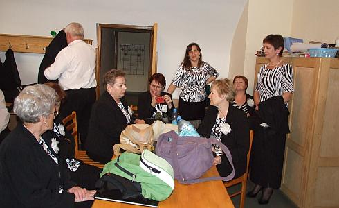
i zaczynamy, ale jeszcze nie koncert, gdyż wszystko dzisiaj zaczyna się od mszy. Camerata oprawia mszę muzycznie, na organach gra Zenon Kulik.
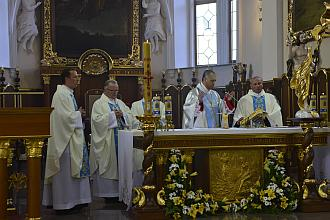 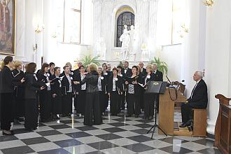
Msza zakończona. Rozpoczynamy koncert. Na początek panowie i piękna „Bogurodzica”.
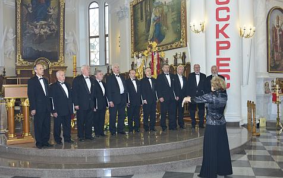
Teraz już wspólnie śpiewamy cały koncert, przy akompaniamencie organów, na których gra Zenon Kulik.
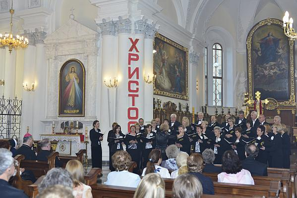
Oczywiście występują też nasi soliści.
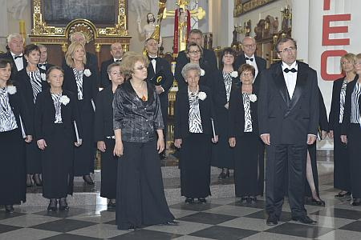
Słuchacze są zachwyceni koncertem, słuchają z wielką uwagą. Wśród słuchaczy na koncercie są obecni:Konsul Generalny Joanna Strzelczyk z pracownikami Konsulatu,
biskup Bronisław Bernacki,
księża i zakonnice z kościołów odeskich,
przedstawiciele organizacji polskich, szkół, chórów.
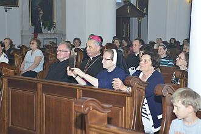
Jeszcze ukłony i koncert dobiegł końca.
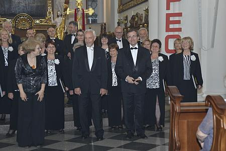
Teraz wspólne zdjęcie,
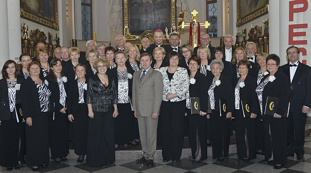
podziękowania, wszyscy wszystkim (oczywiście Camerata dziękuje śpiewając)
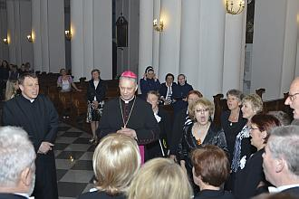 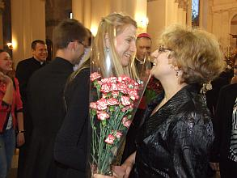 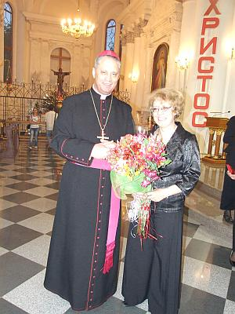
i rozmowy. Rozdajemy ulotki z programem oraz CV solistów i Cameraty po polsku i rosyjsku.
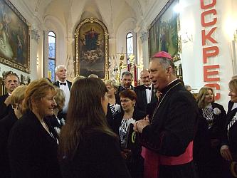 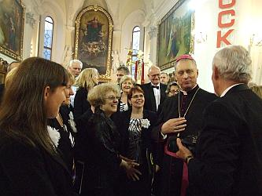
Do hotelu wracamy w super nastrojach. Koncert wypadł wspaniale.
Dzisiaj nie idziemy nigdzie, bo . . . mamy jubilata - Konrad Szota ma urodziny, więc robimy mu niespodziankę :)
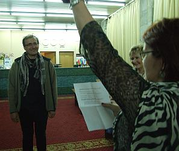
a bawimy się na trawce.
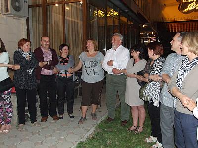
Zabawa była tak wspaniała, że dołączyły do nas Rosjanki z Moskwy, które usłyszały nasz śpiew. Jedną tak urzekła Danusia, że wręczyła jej bukiet bzu, życząc dalszego wspaniałego śpiewania.
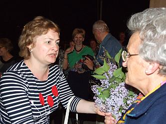 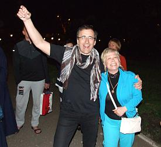

© Stowarzyszenie Muzyczne Chór Camerata Wieliczka
Projekt i wykonanie:  Prowadzenie strony: Małgorzata Wysocka-Cebula
Prowadzenie strony: Małgorzata Wysocka-Cebula